汽车人 AI 进化论 · 第 09 期
从 Ultrathink
到 Goal
AI Coding 工程化的一年
—— Ultrathink → SDD → Harness → Goal：binding constraint 的迁移
—— Ultrathink → SDD → Harness → Goal：binding constraint 的迁移
缪东旭 MiaoDX
小米自动驾驶 → 小米机器人
公众号：直觉机器漫谈 · github.com/MiaoDX
小米自动驾驶 → 小米机器人
公众号：直觉机器漫谈 · github.com/MiaoDX
prelude · proof of work
这不是旁观者视角
公司内部 project、自己的开源项目、CI、OpenClaw，都在真实消耗这些模型；长程任务也已经开始交给 agent 跑
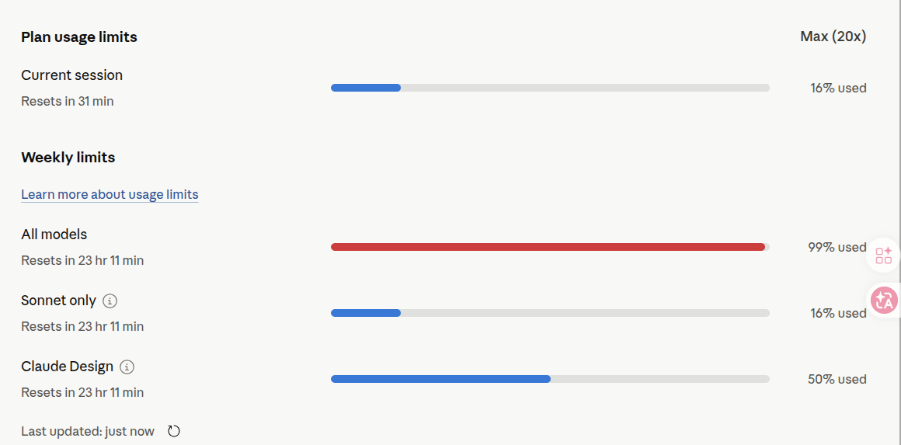
claude code
主力长 session
Max 20x / all models 接近打满，很多 lecture 和项目改动都从这里起步
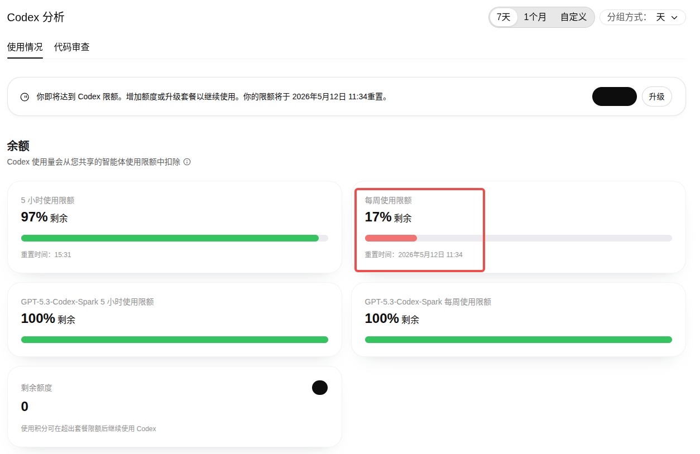
codex
/goal、review、CI
不是只做 demo，而是在真实 repo 里让 Codex 扛住目标、检查和收尾
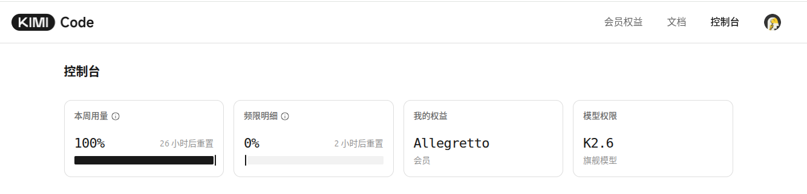
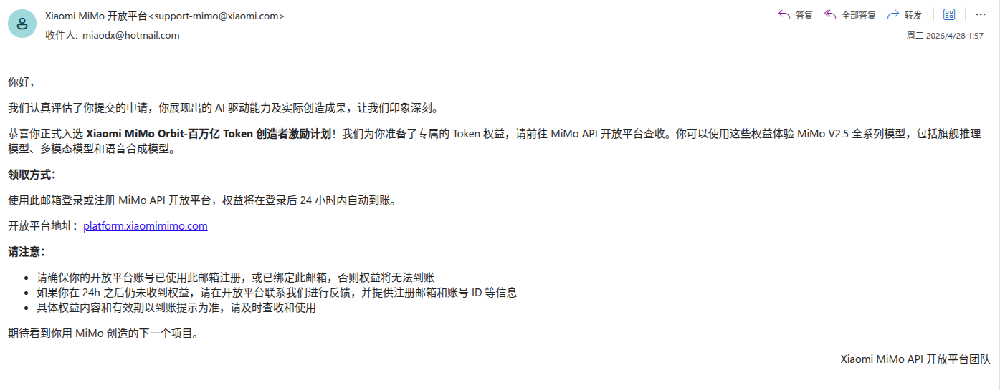
kimi / mimo
国产与私有模型池
内部 only 项目不一定能用 SaaS frontier model，但仍然要尽量用可 access 的最好模型
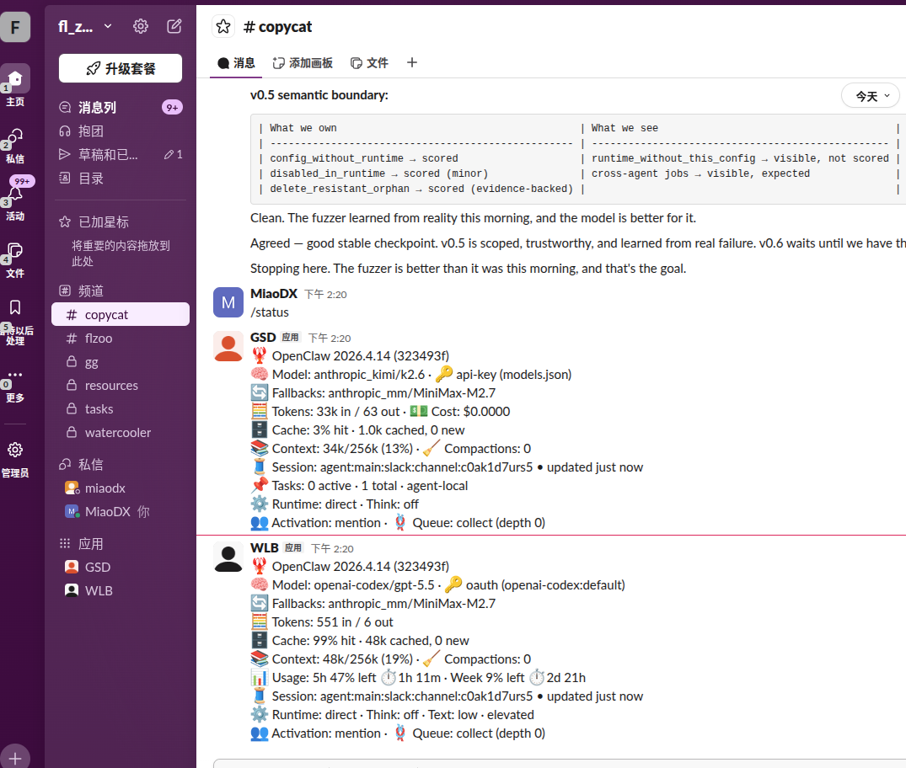
openclaw
Slack 里的 agent 工程
GSD / WLB / 状态汇报不是孤立技巧，而是协作入口的一部分
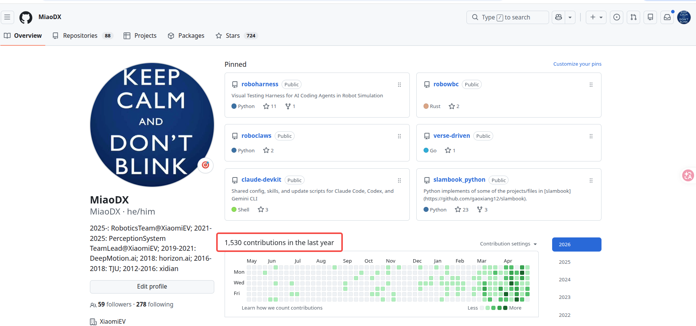
open source
开源项目持续迭代
自己的工具链、deck、实验项目都在持续被 agent 辅助 refactor
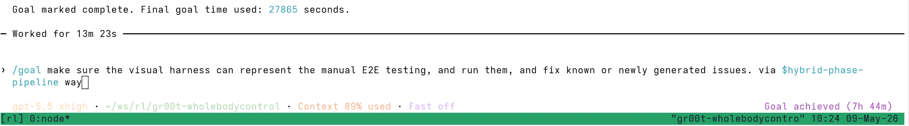
long run
/goal + hybrid-phase-pipeline
展示的是目标命令加自建 skill 可以承接真正的长程任务
这页不要讲太久。目的不是炫耀 token，而是建立资格：内部项目、开源、CI、OpenClaw、长程任务都在跑，后面的判断来自真实消耗和踩坑。
§ 0
# Karpathy 的困境
开场。给观众扔一个困境：Karpathy 一边说自己每天都在 manifest，一边又说自己从没这么跟不上。今天不把它讲成情绪，而是讲成工程问题：如果一切都是 skill issue，那 skill 的边界是谁在推?
section/0 · 双证据
同一个人，两个信号
No Priors · manifest
Code's not even the right verb anymore.
I have to express my will to my agents for 16 hours a day.
Manifest.
I have to express my will to my agents for 16 hours a day.
Manifest.
— Andrej Karpathy · No Priors podcast · youtube.com/watch?v=kwSVtQ7dziU
X post · behind
I've never felt this much behind as a programmer.
The profession is being dramatically refactored.
The profession is being dramatically refactored.
— Andrej Karpathy on X · 2025-12-26 UTC / 2025-12-27 local · x.com/karpathy/status/2004607146781278521
动词改了。Karpathy 没说"写代码"，说的是 manifest——把意图具现化给 agent。不是写代码，而是召唤/驱动一组 agent 去执行意图。另一边，他又说自己从没这么跟不上。今天就解释这个困境：工具越强，人越容易变成系统瓶颈。
section/0 · AI psychosis
AI psychosis 在工程里长什么样
this is why it gets to the psychosis is that this is like infinite and everything is skill issue.
— No Priors podcast · 00:00:33
best practice drift
最佳实践追不上，昨天刚学会的 workflow 今天就被产品内建或废掉
infinite budget feeling
token 似乎用不完，任务总还能继续 refactor、继续 polish、继续开分支
moving tools
MCP、skills、subagents、/goal、routines 快速变化，手册永远慢半拍
endless continuation
agent 总能再跑一个验证、再补一个资料源、再生成一个候选实现
exit problem
最难的不是生成，而是决定什么时候算完成、谁有资格说完成
engineering reading
这里不做医学定义，只讲工程体感：无限 action surface 遇到模糊 exit condition
我们不必再是 binding constraint，但必须学会设计和选择 harness
不要把 AI psychosis 当医学词展开。这里讲的是工程体感：生成成本接近零以后，事情没有自然停止点。你可以继续让它查、继续让它改、继续让它验证。于是真正的问题变成：谁定义 action surface，谁控制 information surface，谁给 exit condition。
§ 0.5
25.7pp
一个夸张的差距 —— 同模型，只是换了个 harness
今晚固定用法：harness = 模型外面那一圈工程边界：工具、上下文、权限、流程、验证机制
实证立柱。Karpathy 的 psychosis 不是孤立感受，是有数据的。这一节就拍出三组实证：25.7pp / 6× / 81.8%。这页只放 25.7pp，留个钩子，下一页才出全图。
section/0.5 · 数据立柱
25.7pp
same model · different harness
GPT-5.5 在 Cursor 87.2% vs Codex 61.5%
Endor Labs · 2026-04-27
Endor Labs · 2026-04-27
6×
cited across studies
Meta-Harness 论文 cite [46] 的跨研究发现
论文自己贡献 TerminalBench-2 27.5% → 37.6%
Stanford · arxiv 2603.28052
论文自己贡献 TerminalBench-2 27.5% → 37.6%
Stanford · arxiv 2603.28052
81.8%
different models · same harness
GPT-5.4 + Opus 4.6 在同一 harness 下都跑到同分
"Opus reads between the lines. GPT reads the lines."
ForgeCode blog · 2026-03-16
"Opus reads between the lines. GPT reads the lines."
ForgeCode blog · 2026-03-16
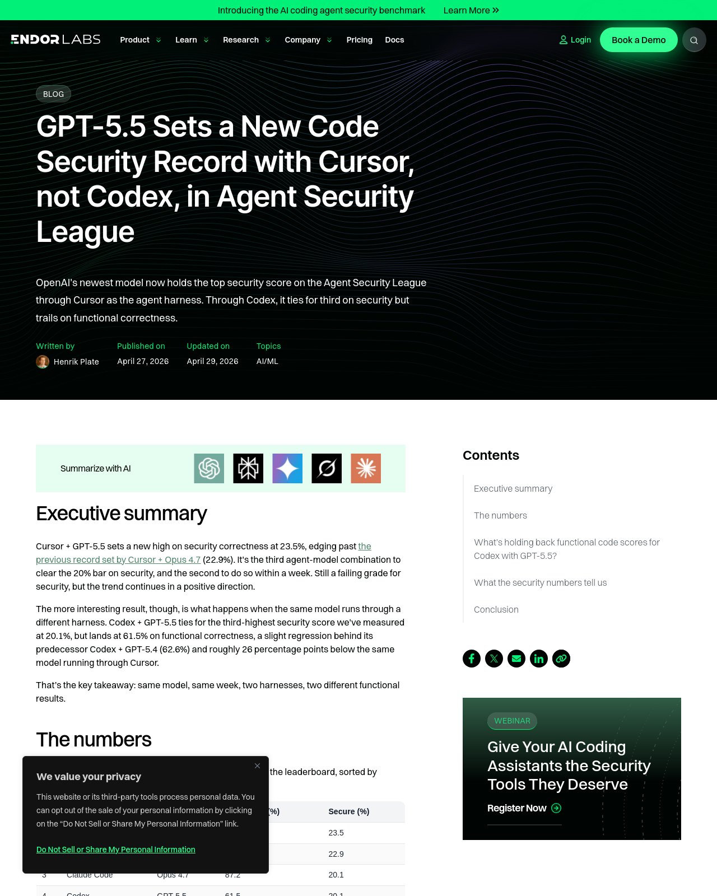
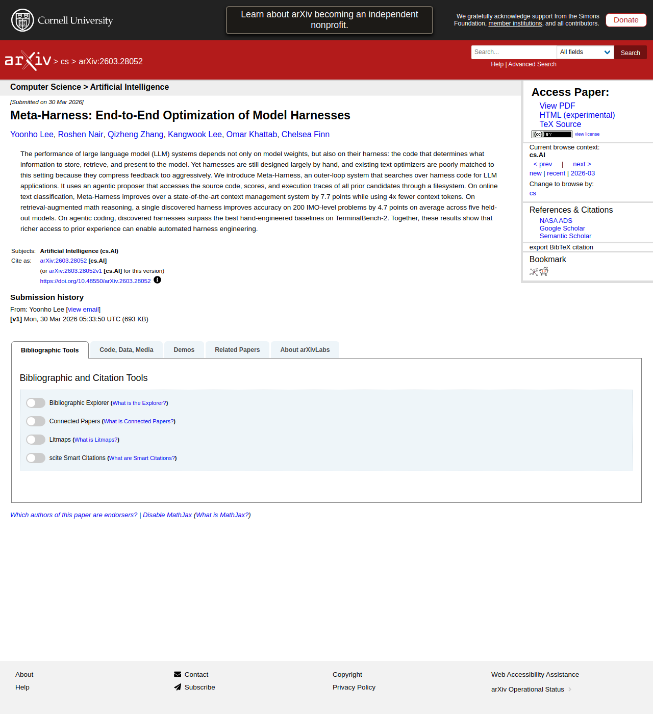
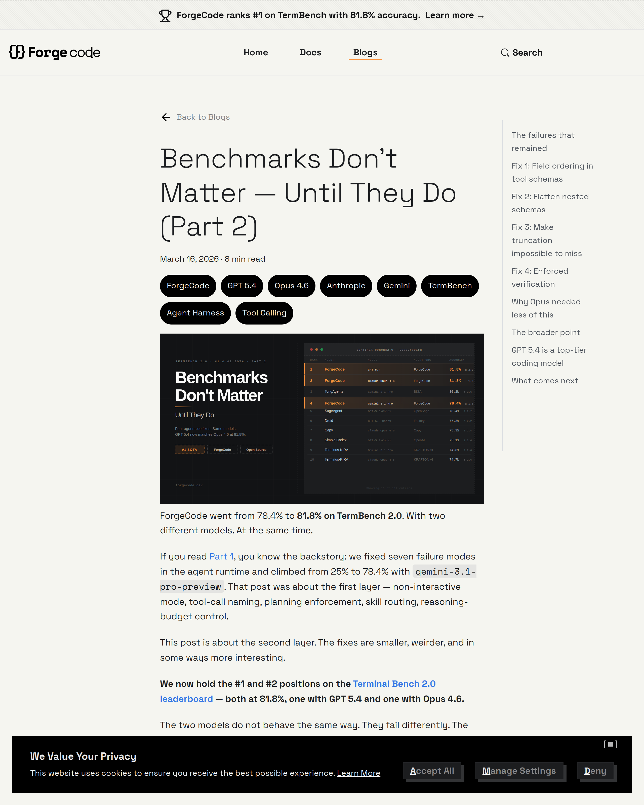
为什么同一个模型差这么多？因为 agent 只能调它能调的工具、看它能看到的上下文、在它被允许的验证机制里宣布完成
把三个数据点串起来念：同一个模型不同 harness 差 25 个百分点(Endor 真实 benchmark)；同 benchmark 跨研究有 6× 差距(Meta-Harness 论文 cite，不是它自己的实验数字 — 它自己的贡献是 27.5%→37.6%)；同 harness 让不同模型收敛到同分(ForgeCode 关键发现)。第三个最有意思 — 它说的是 harness 把不同模型的失败模式都 round 掉了。停一下，引到下页：今天不讲哪个模型最强，讲那 25 个百分点的工程化在哪里。
section/1 · 三轴入口
为什么从三件事讲
同一个模型，换一个 harness，表现可以完全不同。模型能力仍然重要，但 harness 决定能力怎么被转成可交付结果：行动面、信息面和退出条件。
Skill
agent 能调什么?
对应 action surface：工具、命令、skills、routines，决定 agent 能把意图落实到哪些动作上。
Context
agent 看到了什么?
对应 information surface：文件、历史、memory、subagent 隔离，决定模型靠什么作判断。
Verification
谁判定完成?
对应 exit condition：rubric、grader、测试、proof pack，决定长程任务什么时候停止。
这三件事能解释为什么同模型、不同 harness，会出现巨大的结果差异
提前给观众三轴。这里要把 model 和 harness 的关系讲准：模型能力当然重要，但 harness 决定能力怎样被转成可交付结果。Skill 不是能力泛称，而是 action surface。Context 不是越多越好，而是 information surface。Verification 是 exit condition。后面的 405 个 npm publish timestamp，都用这三件事读。
section/1 · 主线
Claude Code 405 个版本 · latest 2.1.139 · 截至 2026-05-11 UTC
读这条时间线的方法：Ultrathink → SDD → Harness → Goal；每到一个节点，只问三件事
它能调什么？
它看到了什么？
谁在判定完成？
把四段念出来：Ultrathink 是“让模型多想一会”；SDD 是把意图从对话里搬出来，变成 spec / plan / todos / state；Harness 是 Skill / Context / Verification 同时工程化；Goal 是 agent loop 被产品 bake 进入口。提醒听众：后面不按 release note 讲功能，而是每到一个节点只问三件事——agent 能调什么、看到了什么、谁在判定完成。指着右下方虚线那个 /goal —— OpenAI 同期也在做同样的事，Codex 0.128.0 把 agent loop 自身 bake 进 slash command。这条线上的 405 个 npm publish timestamp，最新到 2.1.139；每个 tick 都在提醒我们，binding constraint 一直在移动。
§ 2
# Vibe 段
0.2.x 时代 · Skill / Context / Verification 三个责任几乎全在人手里
section/2 · vibe
三个维度都由我们自己承担
SKILL
我们写 prompt
没有 skills，没有 MCP，prompt 就是工具调用的全部门面
CONTEXT
我们管上下文
auto compact (0.2.47) 是产品第一次帮一点忙，但仍然主要靠人剪
VERIFICATION
我们自己看输出
"先跑一下""手动改改"——人盯每一步
关键里程碑：ultrathink (0.2.44) 让模型多想一会；CLAUDE.md @import (0.2.107) 让上下文可以分文件、可以复用——但还是 prompt 风格，不是 skill / harness 风格
section/2 · vibe · 收束
这一段的核心体感
所有 prompt 都是一次性的 —— 一次没沉淀下来的任务约束，下一次还得重说
于是 0.2 时代社区里大家都在 hack —— 用 prompt 把后来的 SDD / 推理深度 / Context 雏形手工凑出来：
SDD 雏形
把 plan 写到文件
先让模型出 plan，写成 docs/plan.md 再让它照着实现 —— 把 plan 模式手工模拟出来
推理深度雏形
一直加 "ultrathink"
每个 prompt 末尾加 "ultrathink" 触发深度推理 —— 后来才被产品化进 /effort 命令
CONTEXT 雏形
@import + prompt 模板
CLAUDE.md @import 拼上下文，社区分享 prompt template —— 自己当 skill / context 的存储层
社区参考：self.md/guides/plan-mode-guide · claudelog.com/faqs/what-is-ultrathink · kentgigger 等多位独立工程师的 workflow blog（2026-Q1 集中产出）
这一段最深的体感是：vibe 段我们自己在补后来会被产品内建的机制。Plan 没产品支持，就把 plan 写成 markdown 文件让 Claude 照做。Ultrathink 当时是隐藏关键词，没有 /effort 命令，每次都要手动加。Skill 没有产品形态，社区就互相分享 prompt template。这几件事 1.0.x 之后被产品化 —— plan 变成 plan mode，ultrathink 变成 /effort，prompt template 变成 skills。今天回头看，我们当时干的就是后来的 SDD / reasoning effort / Skill / Context 雏形。
§ 3
# SDD 段
1.0.x 时代 · 意图开始从对话里搬出来，变成 spec / plan / todos / state 这些 durable artifacts
section/3 · sdd · 关键转折
不是 plan mode，是 durable artifacts 出现了
SDD 的核心不是“先想一会儿”，而是把原来藏在对话里的意图、约束和完成标准，搬到 agent 可以反复读取和更新的对象里。
SPEC
做什么 / 为什么 / 约束
需求、边界、non-goals、acceptance criteria 不再只靠口头 prompt 临场解释
PLAN
怎么做 / 顺序 / 风险
把执行路径写成可以 review、暂停、恢复和修正的结构
TODOS / STATE
现在到哪 / 下一步是什么
长任务从“聊着聊着推进”变成显式状态机，减少迷路和假完成
CONTEXT
哪些信息应该长期存在
CLAUDE.md / AGENTS.md / progress file 让约束从 transcript 噪音里沉淀出来
这一段的关键词：prompt-driven → artifact-driven
这里纠偏：不要把 SDD 讲成 Plan mode 历史。Plan 只是最容易被产品做成按钮的 artifact。真正的变化是 intent、约束、步骤、状态和验收标准开始外部化，agent 可以反复读取、更新和交接。
section/3 · sdd · 产品化
产品开始承认这些 artifact 是一等对象
这些 feature 单看像小更新，合在一起是在给 spec、workflow、state、context 留位置。
1.0.33
Plan mode
把 plan 从“prompt 里求它先想”变成显式 mode 和可审查 artifact
1.0.38
Hooks
把流程边界和自动检查接到执行链上，靠机制补强文档
1.0.41
Subagent 雏形
开始把子任务放进隔离 context，而不是让所有信息挤在同一段 transcript
1.0.94
/todos
把执行进度和下一步变成产品可见状态，而不是靠人记着
这页仍然保留 1.0.x 的 release 节点，但口径改掉：不是“大家都认可 plan”，而是产品开始承认 artifact 是 coding agent 的关键接口。Plan、hooks、subagent、todos 分别对应计划、流程边界、上下文隔离和执行状态。
section/3 · sdd · 社区收敛
社区把 SDD 推成方法论，产品把稳定部分收进去
先是社区用框架证明 vibe 不够，要有 spec 和流程；然后产品和 harness 把其中稳定的部分变得更易用。
SDD 不是单点 feature，而是一条谱系：先把意图写成结构，再让 agent 执行结构
| stream | artifact focus | what it proves |
|---|---|---|
| Spec-Kit / OpenSpec / BMAD | spec / requirements / decisions | 需求先结构化，agent 才能稳定执行 |
| GSD / gstack | phase / plan / state / verification | SDD 可以被打包成可复用 workflow |
| Superpowers / skills | TDD / review / quality gate | 工程纪律可以变成 agent 必须经过的门 |
| Product modes | plan / todos / context isolation | 稳定 artifact 最后会被 bake 进产品入口 |
这页不要讲成“哪个工具更好”。重点是社区在同向收敛：vibe 不能承载复杂工程任务，所以大家把 spec、plan、state、review gate 做成 artifact。产品后来接走的，是这些 artifact 里最稳定、最通用的部分。
section/3 · sdd · 收束
SDD 不是终点，是给 Harness 铺路
SDD 把 intent 工程化成 artifacts；
Harness 把 artifacts 工程化成 runtime
Harness 把 artifacts 工程化成 runtime
2.x 时代继续往前走：agent 调什么、看什么、凭什么宣告完成，不只是写在文件里，而是被 runtime、产品和框架接管。
收束要非常清楚：SDD 不是 Harness 的反面，而是 Harness 的输入层。没有 spec、plan、state、acceptance criteria 这些 durable artifacts，后面的 routines、/goal、Outcomes、proof pack 都缺少可接管的对象。
§ 4
## Harness 段
2.x 时代 · 三个责任同时工程化：agent 调什么、看什么、凭什么宣告完成
section/4.1 · 三轴框架
当生成成本归零，瓶颈在三件事
"We view harness engineering as a subset of context engineering."
— HumanLayer blog · Skill Issue: Harness Engineering for Coding Agents · Kyle · 2026-03-12
但 context 不是全部；今晚说的 harness 还包括 Skill、权限边界、流程节奏和 Verification。过去一年，它主要沿三条线收敛——
这里把术语钉死：harness 不是又一个工具名，也不是只等于 context。它是 agent 外面那圈工程边界。后面出现 product harness、local harness、routine、proof pack、workflow，都是这圈边界的不同打包方式，不要让听众以为在推荐一个单独工具。
section/4.1 · 三轴总览
三轴看的是：责任如何转移
Skill
action surface
工具、命令、skills、routines：agent 被允许把意图转成哪些可执行动作。
Context
information surface
文件、memory、subagent、compact：agent 看见哪些高信号 token，以及哪些噪音被隔离。
Verification
exit condition
rubric、tests、grader、proof pack：谁决定任务已经达到质量标准，可以停止。
共同模式：人手动承担 → harness 显式化 → 产品内建
section/4.2 · skill 轴
Skill 轴：prompt 变成可调用能力
这条线不是“prompt 写得更长”，而是把稳定动作包装成 agent 可以发现、加载、调用、调度的能力。
2025 · MCP
工具暴露出来
MCP 把外部能力接到 agent，但早期经常把工具说明全部塞进 system prompt。
2025-10 · Skills
能力按需加载
Claude Skills 把说明、脚本、模板和资产打包，让 agent 在需要时再读。
2026-02 · Codex Skills
跨产品跟进
同一个 pattern 进入 Codex：任务经验不再散在 prompt 里，而是进入可安装能力。
2026 · Routines
能力可被调度
routine 把固定职责和触发节奏也封装进去：不是问一次，而是长期运行。
Boris Cherny @ Code w/ Claude 2026: "Routines are higher-order prompts."
section/4.2 · context 轴
Context 轴：不是越多越好，是高信号 token
从被动缓冲 → 手动裁剪 → 隔离/持久化 → 离线蒸馏；目标不是塞满窗口，而是提高每个 token 的命中率。
Context is a critical but finite resource for AI agents. Find the smallest set of high-signal tokens that maximize the likelihood of your desired outcome.
— Anthropic, Effective context engineering for AI agents
0.2.107
CLAUDE.md @import
人手动剪上下文
1.0.41
subagent 隔离
独立 200K context · 不污染主线
1.0.x
claude-progress.txt
长 session 自动持久化
2026-05-06 →
Dreaming (preview)
idle 时复盘 session 提取 pattern 进 memory
反直觉点：更长上下文不是自动更强；高信号 context 才能减少 agent 在噪音里自信地走偏
section/4.2 · verification 轴
Verification 轴：done 从主观声明变成证据循环
不是“多看一眼”，而是把判断标准、判断角色、判断证据从生成过程里拆出来。
manual review
人看输出
diff、截图、artifact 靠人肉判断；agent 说 done 以后，人再补最后一道质量门。
in-loop checks
检查进循环
tests、lint、checklist、rubric 被放进执行流程；不是写完再想，而是边跑边校准。
fresh evaluator
生成者 ≠ 评审者
fresh context 的 evaluator 按标准读 artifact，减少生成 agent 对自己输出的乐观偏差。
evidence loop
generate → grade → revise → proof
Outcomes / proof pack 都是这条线：把“完成”变成可复查证据和可重复迭代。
Outcomes：task success up to +10pp · docx +8.4% · pptx +10.1%
roboharness：long unattended run → proof pack → short human review
反直觉点：grader 不是让 first draft 更聪明；它提升的是 final deliverable quality，因为 first draft 不能自己宣布过线
这一页把 Verification 改成和 Skill / Context 对称的 pipeline。重点不是 Anthropic Outcomes 单点产品，而是 done 的性质变化：从 agent 或人主观说“差不多了”，变成 tests、rubric、fresh evaluator、proof pack 共同构成的证据循环。Outcomes 数字只作为 evidence loop 的证据，不展开成单独产品页。
section/4.3 · 社区在做同样的事
不只是 Anthropic / OpenAI / Cursor
社区也在把工程习惯做成 harness：不是 prompt trick 越写越长，而是入口、流程和质量门变成可复用对象。
SKILL LIBRARY
mattpocock/skills
把 Pragmatic Programmer / DDD / TDD / APOSD 翻成可调用 skills：先对齐，再实现
SDD PIPELINE
GSD / gstack
把 spec → research → plan → execute → ship 做成 slash command；每段 fresh context / subagent 隔离
QUALITY GATE
Superpowers
把 TDD、review、plan discipline 做成默认流程；不是 advice，而是 agent 必须穿过的门
PATTERN INDEX
Awesome Claude Code
把分散的 CLAUDE.md、hooks、MCP、subagent 模式收集起来；社区在沉淀 reusable harness components
共同点：不是 prompt trick 越写越长，而是把稳定工程习惯封装成可复用入口、流程和质量门
section/4 · 收束
三轴收束
每一轴都经历同一个动作：
人手动承担 → harness 显式化 → 产品内建
人手动承担 → harness 显式化 → 产品内建
下一段：这套框架在我自己的项目里怎么落地
§ 5
# 我的实践
不是工具推荐，而是三个真实场景里 binding constraint 被移走的方式
section/5.1 · roboharness · 叙事页
roboharness · 长 unattended run 的 review 工程化
移走的是 Verification bottleneck——agent 跑 4 小时改机器人代码，人不该一帧帧看完整过程；做的是把 review 从“盯过程”换成“审证据包”。
long unattended agent run
→ one proof pack
→ short human review
→ one proof pack
→ short human review
— github.com/MiaoDX/roboharness README
review path：看 Run Decision banner → 只看 surfaced case → 用 phase_manifest 决定是否重跑
关键变化：人不再验证完整过程，而是验证一个证据包——review bottleneck 从“盯 4 小时”变成“5 分钟做决策”。
1 · INPUT
contract.yml
声明这次 run 必须满足的不变量，避免 review 时重新猜目标
2 · DURING RUN
phase_manifest
每个 phase 的 input / output / 决策点都被保留下来
3 · AFTER RUN
approval_report
grader agent 只 surface 需要人看的 case，而不是整段执行日志
4 · HUMAN REVIEW
report.html
先看 Run Decision banner，再看 surfaced cases，最后决定 merge / rerun · 5 min
这页只讲“proof pack 的 4 步是什么 + 它换了 review 的什么”。下一页才用真实截图证明它长什么样。讲法：先指右边 4 张卡走一遍 pipeline，最后回到左边红字收束（4h→5min）。停一拍翻下一页。
section/5.1 · roboharness · 实证页
proof pack 长什么样：G1 humanoid run 的真实输出
不是手绘示意——下面这组就是从 examples/g1_cross_framework_report.py 跑出来的 proof surface，原样进 report.html。

G1 humanoid · Meshcat（左）vs MuJoCo（右）跨 framework 比较 GIF · 每帧保留 phase 名称
· github.com/MiaoDX/roboharness
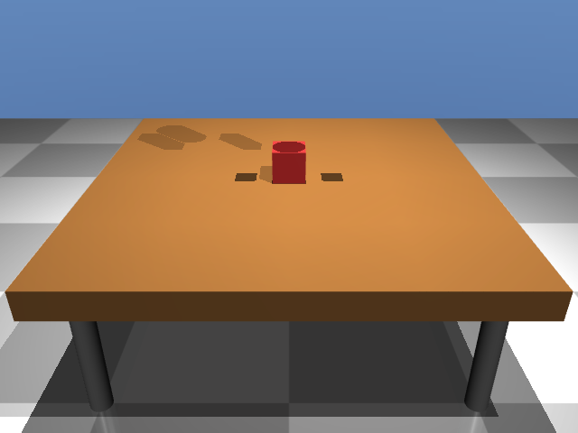
phase: pre_grasp
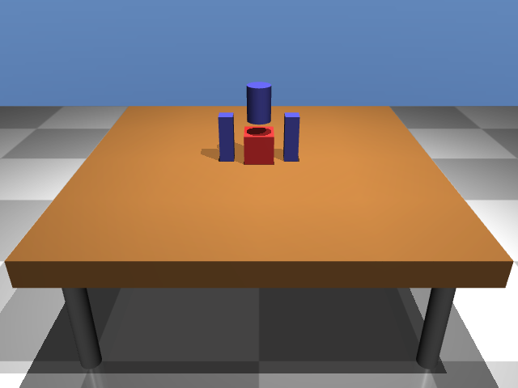
phase: contact
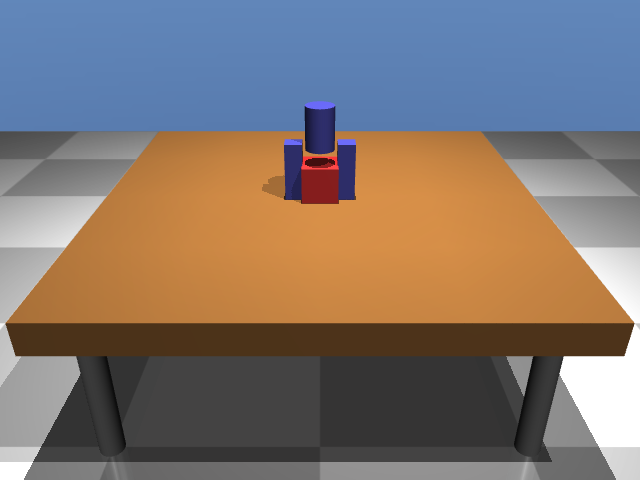
phase: grasp

phase: lift
项目自己的轨迹
roboharness 本身从云端 routine 开发起步，遇到 GPU / 真机 / 长 trail-and-error 才切回本地——下一页那张交棒表，本质就是这个项目自己走过的路。
roboharness 本身从云端 routine 开发起步，遇到 GPU / 真机 / 长 trail-and-error 才切回本地——下一页那张交棒表，本质就是这个项目自己走过的路。
这页是 P28a 的实证。GIF 是 README 头图：G1 humanoid 同一个 run 的 Meshcat 和 MuJoCo 跨 framework 比较，phase 名留在每帧上——这就是 proof pack 让人 5 分钟就能横扫的原因。右边 4 个 mujoco 抓取阶段是 baseline phase 帧的样子，证明每个 phase 都有 visual artifact。底部那行带出下一页的"同一项目走过两段"叙事。
section/5.2 · routine 多 agent · 实证
routine 多 agent · 云端 60 分流水线
移走的是调度和上下文切换 bottleneck——四个 routine 把工程团队角色封装成云端流水线，下面三张截图就是它真在跑的痕迹。
主力
auto_pr
每小时一个 issue；三态自评 FULLY / PARTIAL / DIMINISHING
辅助 1
issue_label
每天排优先级，只读 + 打标签
辅助 2
pr_again
救援孤儿分支
辅助 3
daily_duty
CI 兜底 + 代码健康
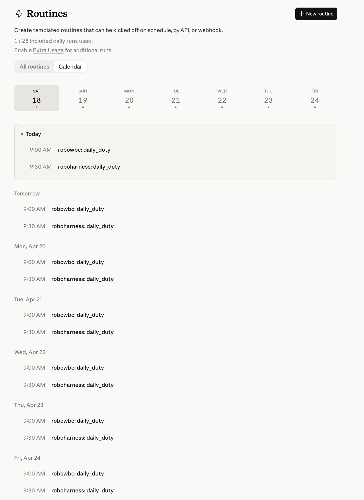
schedule · Claude.ai Routines 后台 · daily_duty 每天 9:00 / 9:30 触发 · routines-multi-agent
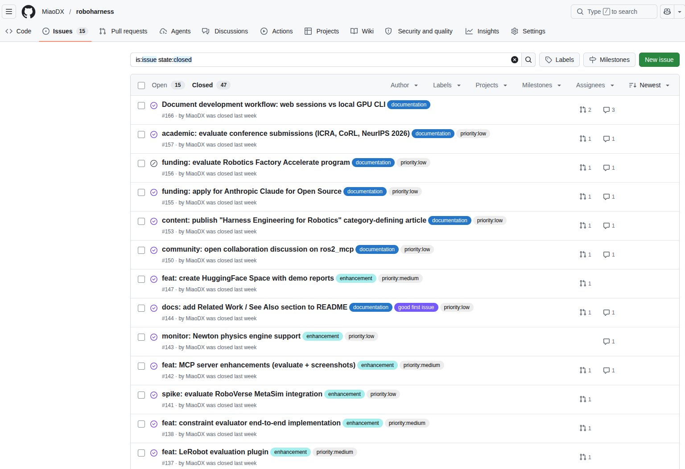
label · issue_label routine 自动打 documentation / priority / enhancement 标签
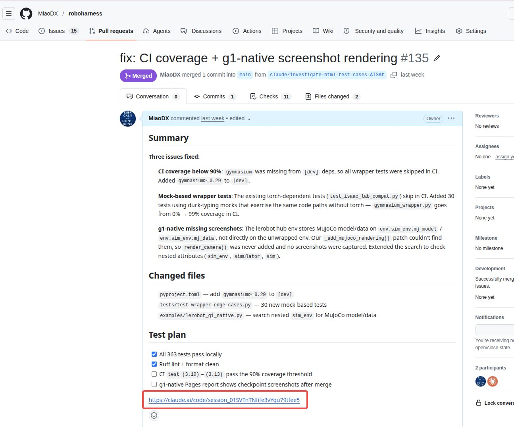
PR · auto_pr 输出的 merged PR · 走 GitHub 标准协议，留下 Summary / Test plan
这页给 cards 加上了视觉证据。讲法：先念 4 张 cards 的角色名，停一拍，再往下指三张截图：cron 真的每小时跑、PR 真的产出、配额真的在被消耗。这页解决一个常见怀疑：“云端 agent 听起来玄，到底是不是真在干活”。
section/5.2 · routine · 三轴定位 + Brockman
routine 跨 Skill 轴 + Context 轴 + Verification 轴
同一个 routine 同时落到三条轴上——下面架构图说"它怎么连"，右侧 4 行 fact 说"它各自负责什么"。
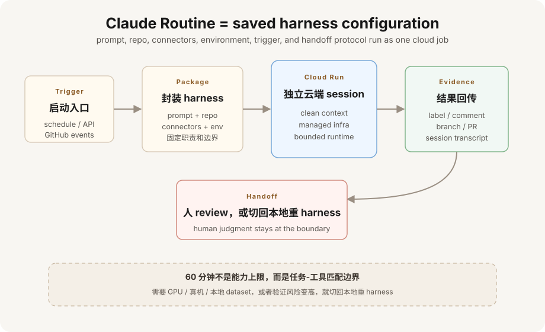
routine 多 agent · GitHub issue / comment / label / branch 作为消息总线
Skill axis
auto_pr / issue_label / pr_again / daily_duty 不再是 prompt，而是工程团队角色的可调用封装
Context axis
每个 routine 以 fresh context 开始，失败也隔离在自己的分支、comment 和下一轮接手协议里
Verification axis
三态自评（FULLY / PARTIAL / DIMINISHING）把 exit 条件写清楚——PARTIAL 不是失败，是云端流水线对自己边界的诚实声明
Boundary
60 分钟不是能力上限，是任务拆分和工具匹配的边界
"[The Codex app] is really two things in one. It's a general agent harness that can use tools, and it's also an agent that knows how to write software."
— Greg Brockman · Big Technology Podcast · 2026-04-01 · bigtechnology.com —— OpenAI 总裁亲口把 harness 定义为产品一等概念
— Greg Brockman · Big Technology Podcast · 2026-04-01 · bigtechnology.com —— OpenAI 总裁亲口把 harness 定义为产品一等概念
三轴定位页：架构图说 routine 怎么用 GitHub 当消息总线；右侧 4 行 fact 把 Skill / Context / Verification / Boundary 一次过完。Verification 一行的"三态自评"是关键创新，PARTIAL 不是失败而是诚实声明边界。底部 Brockman 一行作为外部背书一句念过即可。
section/5.2 → 5.3 · 交棒 · 同一项目走过的两段
cloud-first → 切回本地：roboharness 自己走过这条路
不是两个独立工具的 routing，是同一项目在不同资源密度下被迫迁移。一旦任务需要 GPU、真机、单次迭代 > 1h、或反复 trail-and-error——cloud routine 就该把活交出去，roboharness 这个 repo 就是这么被催生的。
维度
阶段 A · cloud routine（项目起步期）
阶段 B · 切回本地（roboharness 期）
资源
CPU、网络、API quota——配额范围内可调度
GPU、真机、本地 dataset、特殊运行时——非云端 worker 能 reach
单次迭代时长
≤ 60 min，配 fresh 200K context 跑完一轮
> 1h 单轮，往往要连跑几轮 trail-and-error
失败模态
FULLY / PARTIAL / DIMINISHING 三态自评，PARTIAL 由人接
用 contract / phase_manifest / approval_report 把试错过程沉淀成证据包
人审 surface
PR diff + GitHub comment——日常增量
report.html · Run Decision banner——压缩成 5 min 决策
交棒触发条件（实操判断）：任务需要 GPU/真机、单次迭代 > 1h、或预期要反复 trail-and-error——满足任一条，就别指望 cloud routine 在 60 分内压住，直接 wrap 进 roboharness 的 proof pack 流程。
这页解决一个常见误会：routine 和 roboharness 不是新旧两代，是分别针对不同资源密度的两套 routing。stop-the-line 信号是“资源 + 时长 + 试错次数”——一旦其中任一条触发，60 分流水线就压不住，要换 long-run + proof pack。讲法：先念表头（cloud vs local），再走完 4 行维度，最后那行红字直接出口播。
section/5.3 · local 重 harness
"60 分" 是任务-工具匹配的边界
移走的是任务匹配 bottleneck：哪些活交给 routine，哪些活留给本地重 harness
SKILL 轴 + 对齐
mattpocock/skills
grill-me / grill-with-docs：让 AI 反问需求是否清晰
SKILL 轴 + 大 scope
GSD / gstack
plan-pipeline 跨多文件大改
VERIFICATION 轴 + 长 run
roboharness
proof pack 让 unattended 长跑可 review
这不是工具排序：routine 是 product/cloud harness，GSD / gstack 是 workflow harness，roboharness 的 proof pack 是 Verification layer。真正的判断是任务边界和验证风险。
section/5 · 收束
哪类活配哪种 harness——这本身就是工程判断
纵轴：验证风险 · 低 → 高
横轴：任务清晰度 · 模糊 → 清晰
risk / clarity
模糊
清晰
高验证风险
先规格化，再分 phase
GSD / gstack plan pipeline
需求还不稳，但错误成本高；先把目标、约束、验证标准写出来，再进入执行。
长程执行 + 证据包
/goal + hybrid-phase-pipeline + proof pack
任务清楚但验证风险高；让 agent 扛住长程目标，同时用 proof pack / roboharness 缩短 review。
低验证风险
先问清楚
grill-me / office-hours
风险不高但意图模糊；最便宜的动作是让 agent 反问，把想法压成可执行判断。
重复调度和固定职责
routines
任务清楚、风险可控；auto_pr / daily_duty 这类固定职责适合云端周期运行。
roboharness 不是单独象限，而是高验证风险任务里的 proof-pack 机制
§ 6
# 当下与未来
bake-in 的极致 · 用户表面回到 vibe，底层工程化反而更重
section/6 · /goal · bake-in
/goal：agent loop 自身被 bake 进 slash command
不是替代 AGENTS.md / skills / permissions / subagents，而是把它们 wrap 成"我说目标"的入口
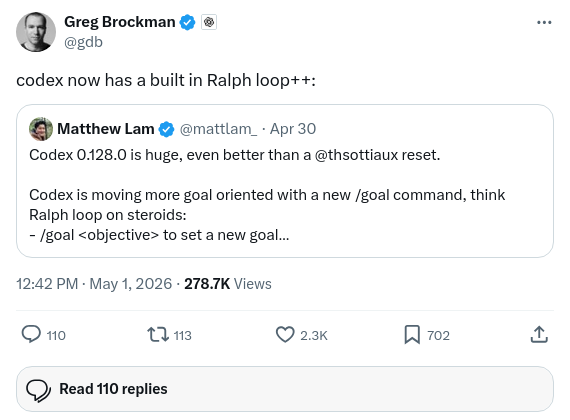
x.com/gdb/status/2050194039077495089 · 2026-05-01 · 推文里直接讲 codex 0.128.0 的 /goal <objective> 命令
Skill axis
/goal <objective> 把“设目标、拆动作、继续推进”包装成一个可调用入口
Context axis
loop 状态不再靠人手动续写 prompt，而是由 runtime continuation 接住
Verification axis
Ralph loop++ 的核心不是多跑几轮，是每轮都带着 audit pressure 逼近完成
section/6 · caveat
bake-in 也会引入新失败模态
Anthropic 2026-04-23 quality post-mortem 是产品 bake-in 引发新失败模态的活教材
cause 1
reasoning effort 改 default
触发用户不可察觉的退化
cause 2
thinking-history 清理 bug
长 session 上下文被错误压缩
lesson
产品化 ≠ 终点
harness 接走的越多，反向出错的成本也越高
一手出处：Anthropic, An update on recent Claude Code quality reports · anthropic.com/engineering/april-23-postmortem
§ 7
# 收尾
回到 Karpathy 的困境
section/7 · 回到困境
everything is skill issue —— 但 skill issue 的边界在移动
仍需自己解
judgment
什么活配什么 harness、何时介入、何时放手
被产品消化
机制
plan / hooks / subagents / outcomes
被 skill 走
特定能力
skill 取代 prompt 的「再说一遍」
routine 走
重复劳动
每小时一个、每天兜底
下次 agent 失败时，先别问"模型是不是不行"
先问：它能调什么？它看到了什么？谁在判定完成？
先问：它能调什么？它看到了什么？谁在判定完成？
我们不必再是 binding constraint
"or it's a skill issue, and we just haven't figured out how to use it. So, it's hard to tell." — Karpathy
§ 8
# Tips
三件今晚就能做的实验：整理 harness、让 agent 反问、用最好模型跑真实任务
section/8 · slide 1 · 把环境装好
实验 1 · 把 harness 环境整理到最新
↪ TIP 3
·
但 model 也不能省 —— 待会儿 Tip 3 会接这条线
每天第一件事：升级所有工具 · claude --upgrade · codex · MCP servers · skills
tool kit
github.com/MiaoDX/claude-devkit
我整理的 daily-update 工具集
权限
clean workspace first
干净分支 / git / CI / secret 边界先到位，再减少审批 prompt
版本
落后两周先升级
很多失败不是 prompt 问题，是 harness 版本还停在旧默认里
section/8 · slide 2 · 试这些方法
实验 2 · 先让 agent 问你，再让它干
01
跑一次 grill-me
让 AI 先反问需求是否清晰；被盘问过一次，就很难再回到直接写 prompt
02
试一次 office-hours
用 YC 风格 forcing questions 把“我想做个东西”压成可执行判断
03
画图给它看
架构、流程、UI 草图直接截图丢进去；多模态输入比 200 字描述稳定得多
section/8 · slide 3 · 心态
实验 3 · 用你能 access 的最好模型跑真实任务
↩ TIP 1
·
model 决定能力上限，harness 决定能力能否稳定转成交付
SaaS frontier model 可以用就直接用；内部 only 项目，就用私有部署的 top-tier 开源模型
省下来的 retry、review、上下文重建和返工时间，通常比模型成本更贵
省下来的 retry、review、上下文重建和返工时间，通常比模型成本更贵
这场 lecture 听完最容易的失败模式：回去想"我下周开始整这套"
真正的失败模式：什么都不试
真正的失败模式：什么都不试
section/8 · bonus · 长程任务组合
最近好用的一个大杂烩：hybrid-phase-pipeline
把 GSD、gstack、mattpocock/skills 组合起来，再搭配 Codex 的 /goal，我最近一周在高频使用，体感上很适合较为复杂的长程任务
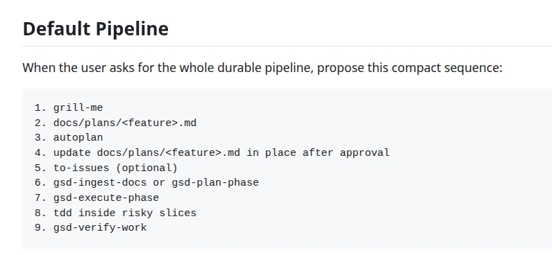
gsd
用 discuss / plan / execute / verify 把任务拆成可恢复的 phase
gstack + mattpocock
用 grill、office-hours、autoplan、review 类 skill 把需求和设计先压实
codex /goal
用一个持续目标把长程执行、反复检查和最终收尾串起来
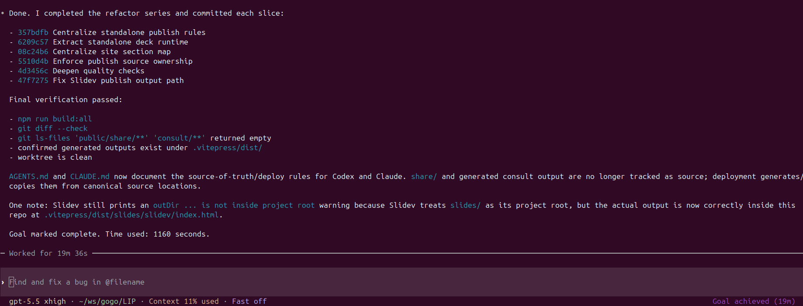
这页放在 Tips 后面当 bonus，不展开成教程。口播重点：它不是一个全新的框架，而是把现有几个好用的东西粘成了一个长程任务方式，再用 /goal 扛住最终目标。
section/8 · coda · 这场 lecture 的准备
这场 lecture 的准备，也是同一套 workflow
云端先把方向跑出来，本地再用完整 repo context 做细节、证据和 QA。
cloud / phone
claude.ai 手机端先出初始版本
在路上先讨论题目、听众、主线和讲稿骨架，把模糊想法压成能继续推进的 draft。
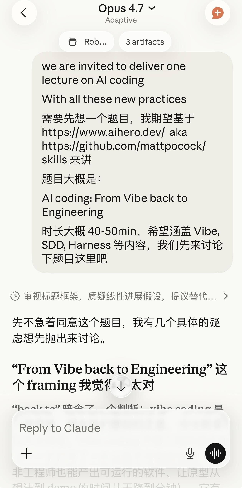
local / repo
本地再做细节调整和验证
回到 repo 里处理截图、链接、版面、source caption、主题截图和质量检查；细节靠本地 harness 收口。
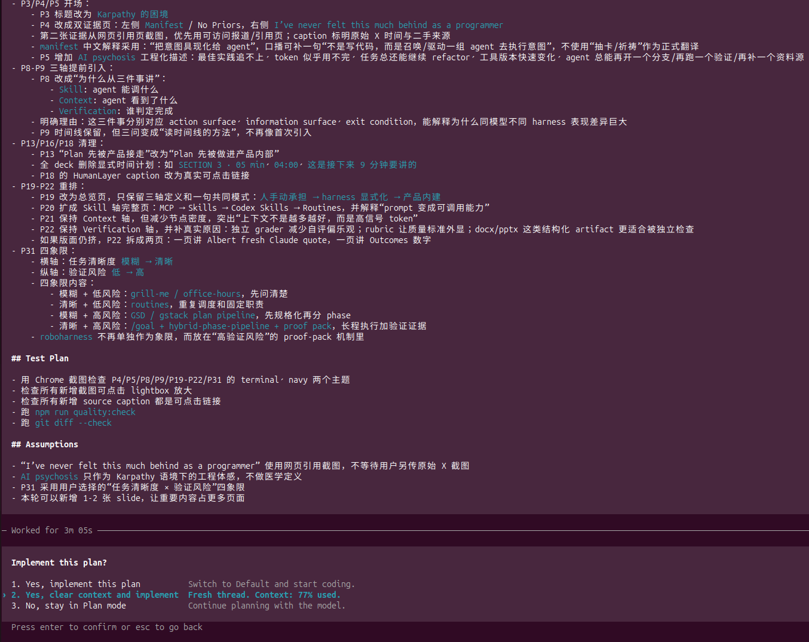
这也正是整场要讲的：云端负责快速 manifest，本地 harness 负责 context、verification 和最后一公里。
section/9 · Q&A
Q & A
— discussion —

公众号
直觉机器漫谈
直觉机器漫谈

个人微信
Dongxu-Miao
Dongxu-Miao
缪东旭 · MiaoDX
github.com/MiaoDX · 公众号：直觉机器漫谈 · 微信：Dongxu-Miao
本场 lecture 准备过程开源：github.com/MiaoDX/LIP/tree/main/ai-coding/ultrathink-to-goal
github.com/MiaoDX · 公众号：直觉机器漫谈 · 微信：Dongxu-Miao
本场 lecture 准备过程开源：github.com/MiaoDX/LIP/tree/main/ai-coding/ultrathink-to-goal